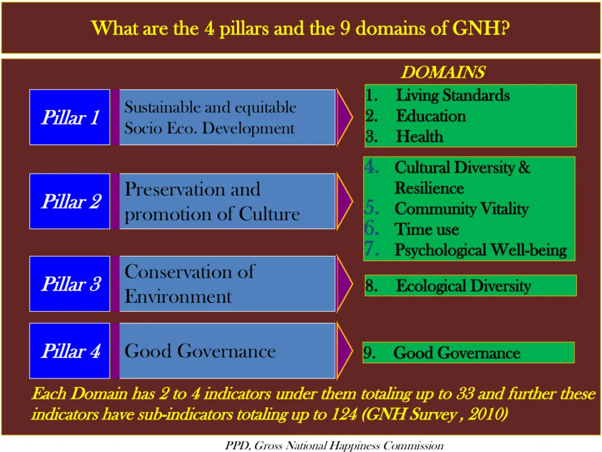

Bhutan’s Gross National Happiness Index
Does it work?
If you like reading about philosophy, here's a free, weekly newsletter with articles just like this one: Send it to me!
The happy kingdom
The Kingdom of Bhutan is not a place you’d normally have heard of. It’s a small country, 46,500 square kilometres: roughly 150 km north to south and 300 km east to west [1]. It’s mostly high mountains and deep valleys, and it stretches from a hot and humid south to the perpetual snow of the Himalayas in the north. What makes it remarkable, though, is that its government has set itself the explicit goal of making its people happier.
In the 1970s, the then King Jigme Singye Wangchuck promoted the idea that monitoring the happiness of a population, rather than other (economic) indicators, would provide a better, more human perspective on a country’s development.
Of course, this immediately poses the question: how could one possibly measure a whole country’s happiness? Is it even possible to measure one single number that would express the country’s happiness in a sensible way?
There are many reasons to believe that this is impossible.
What is happiness?
We talked in another post about Veenhoven’s idea that “happiness” is a word that actually refers to at least four totally different concepts:
- We may be talking about a potential for happiness or about actually achieved outcomes.
- And we may be referring to subjective measures of happiness (as in my private feelings); or to the way people look at me from the outside (“Einstein must have been happy because his life had such an influence on others.")
So we have the view from the inside and the outside, and each can be directed towards potentials or outcomes, which gives us four different versions of what “happiness” could refer to. Therefore, so Veenhoven, talking about “happiness” in general is (at best) misleading. At worst, we would be trying to measure one thing which, in reality, is four different things that cannot be measured together or expressed in one single number.

But this criticism doesn’t seem to make such measurements entirely impossible. As an example, take a lunch. What I get from a “good” lunch will be a whole collection of different things that are valuable to me:
- I will stop being hungry.
- I will experience pleasant taste sensations.
- I will have a conversation with the friends who accompany me.
- I will enjoy the nice chairs and the artsy tablecloth of my favourite restaurant.
Surely all these sensations are valuable to me and will increase my happiness. Equally surely, they are all of different types and cannot be integrated into one single number: for instance, we could not say how many pleasant taste sensations are equal to the feeling of sitting in a comfortable chair. So, in a sense, they have the same properties as Veenhoven’s different interpretations of the concept of “happiness.”
But although I could not integrate them into one single number, I can still compare two restaurants in regard to these four qualities. I can, for example, say that if two restaurants are equal in respect to the other qualities, but one provides more comfortable chairs than the other, then the restaurant with the better chairs is the better restaurant. For this conclusion, it is not needed that I compare values of different types against each other. Comparisons would only be impossible if, say, the taste in one restaurant was worse, but its chairs were better than in the other restaurant. Then I would somehow have to assess the relative values of taste versus seating comfort for myself, which might be hard (or impossible) to do. But in many cases I could still come to a conclusion although the four aspects of what I value in a restaurant are different and not comparable to each other in a straightforward way.
Are you sufficient?
Bhutan’s Gross National Happiness Index (GNH) takes a slightly different approach. The problem is:
- On the one hand, it wants to measure a whole lot of different kinds of happiness, both subjective and objective, both potentialities (the value of education) and actual outcomes (the quality of one’s house). It is not clear how these different values could possibly be expressed in one single number.
- On the other hand, the GNH needs to somehow make these different values comparable, or the GNH would be unusable as a measure of happiness. Because if I had multiple numbers that cannot be compared to each other, how would I know which state of affairs is “better” than another? “Better,” defined numerically as the bigger “number” of some happiness measure, can only be meaningfully calculated if I can, indeed, express happiness as one number.
So how did they go about solving this problem? They defined cut-off values for happiness that define different levels of “sufficiency.”
Back to the restaurant example: Let’s assume that I can describe the taste of the food as “poor,” “acceptable,” “good,” or “excellent.” I can do the same with the feeling of sitting on a specific chair. I can do the same when I describe my experience of talking to my friends. Now let’s say that I define a “deeply happy” experience as one where at least three out of the four criteria are valued as “excellent.” I will call an experience “happy” if at least two out of the four criteria are “excellent” and at least one more is “good.” And so on downwards on the scale of satisfaction. A “miserable” experience would be one where all four criteria are evaluated to be “poor.”
You see the advantage of this way of assessing things. I no longer need to compare the quality of the conversation of my friends with the taste of the food, or the hardness of the chair. Each one is measured separately and its quality is evaluated along its own sufficiency scale. But since in the end every aspect of the experience is described using the same sufficiency scale, I can now compare the experiences along that scale.
This is how the GNH works.
“Sufficiency” and happiness
Of course, the whole thing is more complex than my restaurant example. The GNH attempts to measure happiness across four “pillars” and nine “domains.” In the end we get 33 “indicators” and a total of 124 survey questions:

Source: The Government of Bhutan, Gross National Happiness Commission: Bhutan GNH FAQ
It is interesting to see what counts as an indicator for happiness. Not only living standards, education, and health, but also preservation of culture, good governance, community vitality, and “time use.”
In the words of the same FAQ document:
GNH in Bhutan is distinct from the Western literature on happiness:
This is interesting, not least because of its obvious misrepresentation of what the “Western” idea of happiness is about. Equating “Western” happiness with fleeting, pleasurable “feel good” moods is not even an acceptable description of Bentham’s felicific calculus, and is totally at odds with how Aristotle, Bertrand Russell, the Stoics, and the Epicureans would define happiness, to name just a few prominent concepts.

What Is a Stoic Person?
A Stoic is an adherent of Stoicism, an ancient Greek and Roman philosophy of life. Stoics thought that, in order to be happy, we must learn to distinguish between what we can control and what we cannot.
East and West
Still, emphasising the East/West distinction poses another interesting question: Is there really an “Eastern” happiness that is fundamentally different from “Western” happiness? Is happiness a culturally relative concept, or is it the same for all human beings, where ever they may be located at some point in time?
Clearly, the GNH was never intended to be used outside of Bhutan. Some of its indicators are extremely culture-specific: for example it measures whether houses have a toilet built-in, a measure that would not be sufficiently discriminating in the West (since all houses have one). It also assesses political participation in village communities, or the observance of particular Buddhist rituals, or the mastery of the local language and traditions. So the GNH itself could not be used to assess any other country than Bhutan.
But, of course, it could be rewritten. The questions that are specific to Buddhism could be, for instance, changed to ask about Islam or Christianity.
Still, the question remains. Just changing a question about Buddhism to a question about Christianity does not tell us anything about the relative roles of Buddhism and Christianity in their respective societies. I would not only need to know how people respond to the question “how often do you visit a temple/church,” but I would also need to take into account how important visiting a church or a temple is in that society as a factor that contributes to happiness. The social importance of a mosque in Saudi Arabia is likely to be very much higher than that of a church in Berlin or New York.
In the same way, just asking if a house has a toilet is specific to Bhutan, and would be meaningless in the West, where all houses have toilets. But how could we meaningfully translate this question into another that would have an equivalent weight? Is having a TV in the West equivalent to having a toilet in Bhutan? Or is it more like a computer at home? An iPhone?
This is not the only problem. Societies themselves also change. Perhaps in twenty years everyone in Bhutan will live in a house with a toilet. At this point this question would have to be revised, but then the new GNH would not any more be comparable to the old one, thus putting in danger the whole idea of long-term comparison that is the basis of the project.
And beyond that, we could also ask whether there are specific kinds of happiness that are available only to particular cultures. Can a secular culture even understand what it means to people of another culture to live in harmony with the divine law? Is the concept of human rights perhaps only a Western concept that does not contribute to the happiness of other cultures? Is there a specifically Chinese happiness, as the Chinese author Lin Yutang [3] famously argued?
Theory, manipulation, and harsh reality
Let’s have a look at some of the questions and results in the survey itself.
“In literacy, 48.6 percent have attained sufficiency.”
What does sufficiency mean for literacy? According to Ura et al (2012), “a person is said to be literate if he or she is able to read and write in any one language, English or Dzongkha or Nepali.” (p.15). Properly understood, then, this means that 51.4 percent of the population of Bhutan, more than half, cannot read or write in any language. This is not a good thing, which is partially masked by the (misleading) talk of “sufficiency.” One would expect insufficiency to mean less than the complete absence of any form of literacy in any language.
“The language indicator is measured by a self-reported fluency level in one’s mother tongue on a four-point scale.”
This is also interesting. Self-reported fluency in one’s mother tongue. Is this likely to ever be given a low score? The fluency is self-reported, so in order for this to be reported as low, one would have to have a low assessment of one’s own abilities in one’s mother tongue. First, who is ever going to admit that he doesn’t speak his own mother tongue well? And second, how would one even know that one’s fluency in the mother tongue is deficient? If one had access to better language resources (speakers, education), one’s fluency would already have increased under the influence of these factors. So we are talking about people who live in surroundings where the level of fluency is similar to their own. How then would these people, without any way of experiencing more advanced fluency levels, come to conclude that their own fluency is not sufficient?
No wonder that “With this threshold, at present an impressive 95.2 per cent of respondents are classified as sufficient.”
Working and sleeping hours
The report by Ura et al (2012) names a limit of 8 hours for work, and a requirement of another 8 hours for sleep. Yet only 45% are sufficient in that they don’t work more than 8 hours. And only 67% get sufficient sleep. This is particularly interesting since, as the report mentions, eight hours of work is also the legal limit (p.20). This means that 55% of the population are not only overworked, but that they work these hours in violation of the law, which obviously is ineffective in regulating working hours.
Political participation
“The measure of political participation was based on two components: the possibility of voting in the next election and the frequency of attendance in zomdue (community meetings).” (Ura et al, p.21).
Note that nothing is said about the effectiveness of these measures, or about whether citizens feel that they have influence over their country’s politics. The parameters measured are purely formal: the possibility of voting (not even the actual participation), and the frequency of attendance in community meetings (but not satisfaction with their outcome). Still, around 44% are deprived of political participation according to these measures.
Health services
“In health services, people less than an hour’s walk to the nearest health centre are considered to have sufficient access.” (Ura et al, p.21)
Really? An hour’s walk? That means that if someone is in need of a health centre, the ill person has to start walking for an hour to reach that centre. The GNH survey groups health services together with trash disposal and access to electricity and water. Only 41% of Bhutan’s population achieve sufficiency in all four areas.
Pollution
Pollution is tested by assessing the “perceived intensity of environmental problems,” not the problems themselves. This is a particularly critical difference in a country with a low literacy rate.
Seven environmental issues are presented to the subject filling out the questionnaire. If he or she rates at least five out of seven as “some concern” or “major concern,” then he or she is rated insufficient in regard to the environment. Note again that the insufficiency is not measured according to the objective state of the environment, but only in respect to how much the citizens are concerned about it. No concern, no problem. Some concern, also no problem. We need five out of seven areas to be of concern in order to rate someone as insufficient.

Modern ecological ethics reaches back to Aristotle and his idea that the flourishing of any one thing is dependent on the flourishing of everything else.
Of course, “concern” about the environment does not only depend on the environment, but much more on the person whose concern I am evaluating. People who have little environmental education will be naturally less concerned than people who are sensitive to environmental issues. Educated people will see long-term problems where uneducated people will not. So in a country with a very low education level, environmental problems will tend to disappear in this kind of survey; not because the environment is fine, but because only few have enough understanding to be at all concerned about the state of the environment.
Objective criteria or self-evaluation?
More generally, there’s nothing wrong in principle about mixing self-evaluation questions with objective measurements in such a sweeping survey. But things get shady when one asks self-evaluation questions only for those areas in which the self-evaluation, due to psychological peculiarities or ignorance, is likely to give the best result (self-reported fluency, environmental concerns); while one asks for objective measurements only where these are likely to lead to a better result than self-evaluation (housing quality, participation in political processes).
Picking a particular type of question depending on the expected outcome is introducing a significant bias that, in this case, seems to be entirely in favour of governmental policies rather than the truth.

Are some desires better than others?
Epicurus believed that the most reliable way to be happy is to reduce one’s desires until it’s easy to satisfy them.
A happy kingdom?
This was a long post. We got a taste for how Bhutan’s GNH works, and we saw a few problems with it. The most interesting questions seem to be:
- How could one devise questions that minimise bias and lead to an evaluation of people’s happiness that is as close to the truth as possible, while respecting both subjective self-evaluation and objective criteria as part of that truth?
- Could such a survey be made to transcend cultural boundaries, and how could it be made to provide a stable measure of happiness in the face of changing social conditions?
The GNH survey, as it is now, is a great idea, but it seems to be rather problematic in the details. Particularly, there is an incentive for any administration whose effectiveness is judged through such a survey to make the numbers look good, which leads to misleading questions and cherry-picking of evaluation methods in order to maximise the resulting GNH index.
Notes
[1] The Government of Bhutan: 8th Five Year Plan. Available online: http://www.gnhc.gov.bt/five-year-plan/
[2] Veenhoven, Ruut (2000). The Four Qualities of Life. Journal Of Happiness Studies, vol 1, pp 1-39.
[3] Lin Yutang, The Importance of Living (1937).
Read more
- The Government of Bhutan, Gross National Happiness Commission (2013). “FAQs on GNH.” Available at: http://www.gnhc.gov.bt/wp-content/uploads/2013/04/GNH-FAQs-pdf.pdf
- Ura, K.; Alkire, S.; Zangmo, T. Gross National Happiness and the GNH Index. In World Happiness Report; Helliwell, J., Layard, E., Sachs, J., Eds.; Earth Institute: New York, NY, USA, 2012. (Also available online).